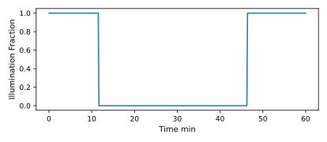
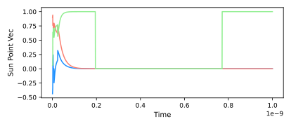
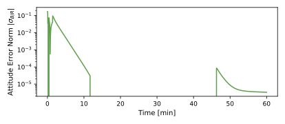
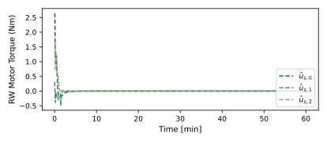
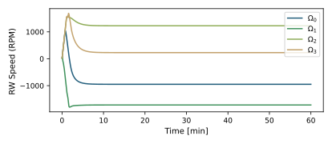

6. scenario_AttEclipse
6.1. Overview
This bskSim script demonstrates how to use sun safe pointing in conjunction with the Eclipse, RW, CSS Weighted Least Squares Estimator, and CSS modules to provide attitude guidance as the spacecraft passes through an eclipse while orbiting the Earth.
This script sets up a 6-DOF spacecraft which is orbiting the Earth. The goal of the scenario is to illustrate
how to add the eclipse module to simulate shadows being cast over a CSS constellation,
how to use these added modules to make use of sun safe pointing as a flight software algorithm to control RWs, and
configure a custom timestep for the dynamics and FSW processes.
The script is found in the folder basilisk/examples/BskSim/scenarios and executed by using:
python3 scenario_AttitudeEclipse.py
The simulation layout is shown in the following illustration. Two simulation processes are created: one which contains dynamics modules, and one that contains the Flight Software (FSW) algorithm modules.

Given the complexity of the simulation, the standard dynamics and FSW time step of 0.1 seconds leads to excessively long
computational time. The user can change the standard time step for either or both processes by
changing the fswRate and dynRate:
TheBSKSim = BSKSim(1.0, 1.0)
The first argument is the FSW time step and the second is the dynamics time step (both units of seconds). The user is cautioned when setting a changing the standard time step as too large a time step can lead to propagated inaccuracy.
When the simulation completes several plots are shown for the eclipse illumination factor, the sun direction vector, attitude error, RW motor torque, and RW speed.
6.2. Custom Dynamics Configurations Instructions
The fundamental simulation setup is a combination of the setups used in scenarioAttitudeFeedback and scenarioCSS. The dynamics simulation is setup using a Module: spacecraft module to which an Earth gravity effector is attached. In addition a CSS constellation and RW pyramid are attached.
The new element is adding the eclipse module self.eclipseObject to the simulation environment.
The module requires spice data regarding the location of the sun, the planets, and the spacecraft to simulate shadow-casting effects. In combination these inputs can produce an output that is attached to the CSS constellation which simulates a shadow. The eclipse object output is sent to the individual CSS sensors.
6.3. Custom FSW Configurations Instructions
The general flight algorithm setup is different than the earlier simulation scripts. Here we use the Module: sunSafePoint guidance module, the Module: cssWlsEst module to evaluate the sun pointing vector, and the Module: mrpFeedback module to provide the desired \({\mathbf L}_r\) control torque vector.
The Module: sunSafePoint guidance module is used to steer the spacecraft to point towards the sun direction vector. This is used for functionality like safe mode, or a power generation mode. The inputs of the module are the sun direction vector (as provided by the Module: cssWlsEst module), as well as the body rate information (as provided by the simpleNav module).
The sHatBdyCmd defines the desired body pointing vector that will align with the sun direction vector.
The sun direction vector itself is calculated through the use of a CSS constellation and the Module: cssWlsEst
module. The
setup for the CSS constellation can be found in the scenarioCSS scenario. The Module: cssWlsEst module
is a weighted least-squares minimum-norm algorithm used to estimate the body-relative sun heading using a cluster of
coarse sun sensors. The algorithm requires a minimum of three CSS to operate correctly.
6.4. Illustration of Simulation Results
showPlots = True
This plot illustrates the illumination fraction calculated by the CSS as the spacecraft orbits Earth and passes through the Earth’s shadow. 0.0 corresponds with total eclipse and 1.0 corresponds with direct sunlight.
The Module: cssWlsEst module calculates the position of the sun based on input from the CSS. The corresponding vector’s three components are plotted. When the spacecraft passes through the eclipse, it sets the sun direction vector to [0.0,0.0,0.0].
 The spacecraft does not change attitude if the sun direction vector is not detectable. Once the CSS rediscovers the sun upon exiting the eclipse, the spacecraft corrects and realigns with the sun direction vector.
 - scenario_AttEclipse.run(showPlots)[source]
The scenarios can be run with the followings setups parameters:
- Parameters:
showPlots (bool) – Determines if the script should display plots